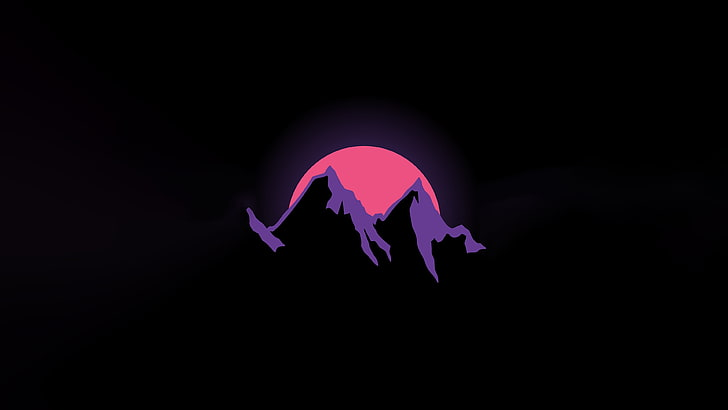

My Work


Souhail is a driven 3rd year software engineering student from morocco with a passion for programming and ethical hacking. This realization led him to switch his focus to software engineering, where he has been honing his skills in python, sql, c++, c, c#, html, css, php, and assembly. recently, Souhail has been dedicating his nights and weekends to building a cybersecurity webapp using django. while still in the early stages of development, he is determined to see this project through and is actively seeking collaborators and investors to help bring his vision to life. in the past 6-12 months, souhail has made significant strides in his personal and professional growth, earning several google certificates related to cybersecurity, hosting an event for his engineering school, and learning the basics of django to lay the foundation for his webapp. as a fast learner with a strong work ethic, souhail is open to various opportunities in the software, ethical hacking, and cybersecurity fields. he is confident in his ability to quickly adapt and excel in any role related to these areas. when asked what he would say to convince an investor to support his project, souhail responded with unwavering conviction: "i can do anything i put my mind to with a little bit of time, resources, and effort."